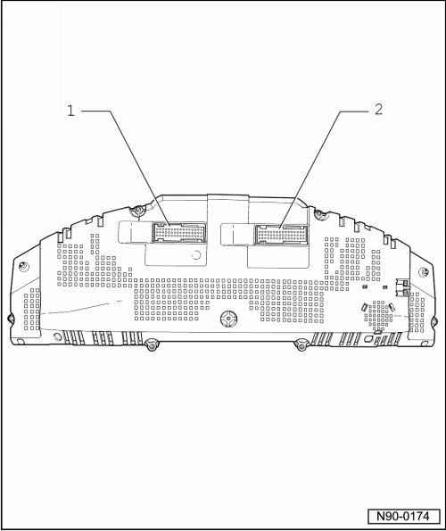

Rear Side of Instrument Cluster, Description
Rear Side of Instrument Cluster, Description
• Do not disassemble instrument cluster. In the event of malfunctions, replace complete instrument cluster.

1 - Connector, 32-pin
• Blue
• Connector assignment, vehicles through 11/06 --> [ Instrument Cluster Connector Assignments, through 11.06 ] Instrument Cluster Connector Assignments, through 11.06
• Connector assignment, vehicles from 12/06 with monochrome display
• Connector assignment, vehicles from 12/06 with color display
2 - Connector, 32-pin
• Green
• Connector assignment, vehicles through 11/06 --> [ Green 32-Pin Connector, through 11.06 ] Instrument Cluster Connector Assignments, through 11.06
• Connector assignment, vehicles from 12/06 with monochrome display
• Connector assignment, vehicles from 12/06 with color display